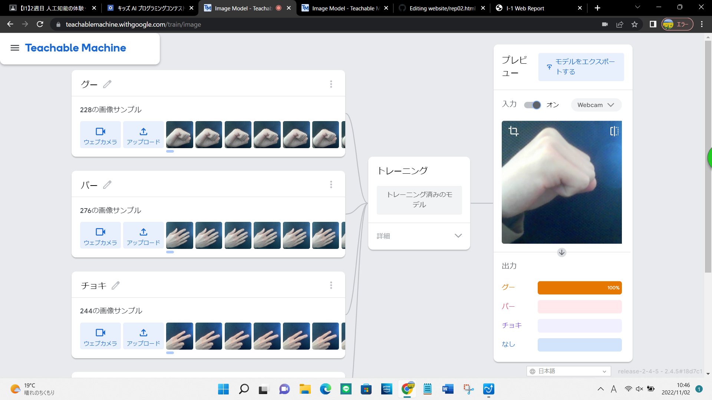

第2週目
2-1 １週目のレポートをHTMLで作る
１週目のレポート
1.内容
前回と同じようにgithubを用いて１週目のレポートを作成した。
また、各レポートから大元のホームページのリンクを張り付けた。
2.感想
今回はこうしたテンプレートが用意されているから楽にレポートをかけているが、
自分で最初からレポート作成するのは大変そうだと思った。
2-2 機械学習体験

1.内容
teachable machineを用いていくつかの画像から対象の画像を選別するプログラムを作成した。
今回はグー、チョキ、パーの３種類の画像を使った。
2.感想
読み込ませる画像の数を増やしたり、対象を様々な角度から撮影すると、
選別の精度がより向上するところが面白いと思った。
2-3 VR（バーチャルリアリティー：Virtual Reality）の体験
1.内容
VRゴーグルを用いてオンラインミーティングを行った。ルーム内では他のゴーグルをつけている学生の動きがわかったり、
ホワイトボードに文字を書き込んだりできた。
2.感想
実際にそこにないものを存在すると錯覚させるのはすごい技術だと思う。
体験してみてとても楽しかったし、ゴーグルを外したときの現実に引き戻された感がすごかった。